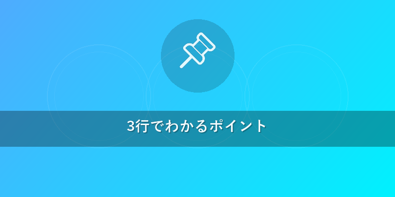
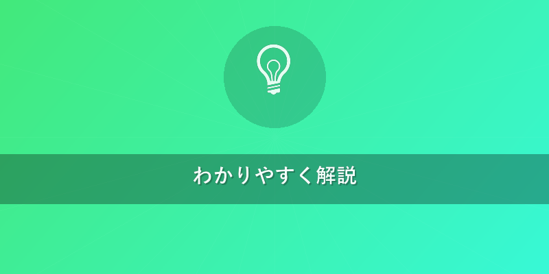
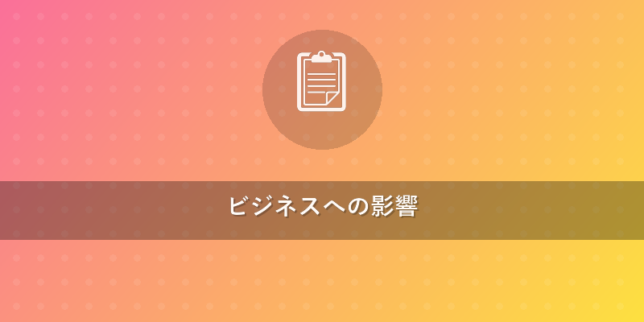

Quantum Brief
カテゴリ: 量子コンピューティング基礎
量子コンピューター最新動向：未来を掴む3分解説

3行でわかるポイント
- ハードウェア進化が加速: IBM、Googleなどが量子ビット（情報を表す最小単位）数を増やし、エラー率低減へ躍進中。
- ソフトウェアも実用化へ: NISQ（ノイズの多い中間規模量子コンピューター）向けのアルゴリズム（計算手順）開発が進み、利用の裾野が拡大。
- ビジネスでの活用が本格化: 製薬、金融、物流など多分野で実証実験が進み、近い将来のビジネス変革が期待されます。

わかりやすく解説
忙しいビジネスマンの皆さん、こんにちは！ Quantum Brief編集長の〇〇です。 量子コンピューターと聞くと「難しそう」「まだSFの世界の話では？」と思うかもしれません。しかし、その最新動向は目覚ましく、私たちのビジネス、そして社会を一変させる可能性を秘めています。今回は、その最前線を中学生にもわかるように解説します。
量子コンピューターって、そもそも何？
従来のコンピューターが「0」か「1」のどちらか一方で情報を処理するのに対し、量子コンピューターは「0と1の両方を同時に」扱える量子ビット（情報を表す最小単位で、0と1の両方を同時に持てる不思議な性質がある）という特性を使います。これにより、膨大な計算を驚異的な速さで処理できる、まさに「夢の計算機」なのです。{{internal_link:量子コンピューターの基本}}
ハードウェア進化が加速！性能競争の最前線
現在、世界中で量子コンピューターの「脳」となる量子プロセッサー（量子ビットをたくさん集めて計算を行う部分）の開発競争が激化しています。
-
超伝導方式 (IBM, Googleなど)
- 現在主流の方式の一つで、極低温に冷やした金属の回路を使って量子ビットを作ります。IBMは2023年に1121量子ビットを持つ「Condor」を発表するなど、量子ビット数の増加を続けています。これは、従来の「Eagle」（127量子ビット）や「Osprey」（433量子ビット）を大きく上回るもので、より複雑な計算への道を開きます。
- 課題はエラー率（計算間違いが起こる確率）の低減で、これを克服するための技術開発が活発です。
-
イオントラップ方式 (IonQなど)
- 電場を使ってイオン（電気を帯びた原子）を閉じ込め、レーザーで操作して量子ビットを作る方式です。超伝導方式に比べて量子ビットのコヒーレンス時間（量子的な性質が保たれる時間）が長く、高精度な操作が可能です。米国のIonQ社などがこの分野をリードしており、高い計算精度が特徴です。
-
光量子コンピューター (中国など)
- 光の粒である「光子」を使って量子ビットを作る方式です。特定の計算では非常に高速な処理が可能で、室温での動作が期待されるなど、今後の進化に注目が集まっています。
-
国産技術の躍進
- 日本でも、NTTや富士通などが量子アニーリング（特定の種類の最適化問題を解くことに特化した量子コンピューター）や、NISQデバイス（ノイズの影響を受けやすいが、現在の技術で実現可能な中間規模の量子コンピューター）の開発に取り組んでいます。特に、日本の材料科学技術は量子コンピューターの基盤材料開発で世界をリードする可能性があります。
ソフトウェア・アルゴリズムも進化！実用化への道のり
量子コンピューターを動かすには、専用のアルゴリズム（計算の手順や方法）が必要です。最近では、NISQデバイスでも使える実用的なアルゴリズムの開発が加速しています。
-
VQE（変分量子固有値ソルバー）やQAOA（量子近似最適化アルゴリズム）
- これらは、現在のノイズの多い量子コンピューターでも、化学計算や最適化問題に応用できると期待されています。製薬会社の創薬や新素材開発に役立つ可能性があります。
-
量子エラー訂正
- 量子コンピューターの計算は非常にデリケートで、ノイズの影響を受けやすいのが課題です。このノイズによるエラーを自動で修正する量子エラー訂正（計算中に発生する間違いを自動で修正する技術）の研究が進められています。これが実現すれば、より大規模で信頼性の高い計算が可能になり、フォールトトレラント量子コンピューター（エラーを自動で修正し、誤りのない計算ができる究極の量子コンピューター）の実現に一歩近づきます。{{internal_link:量子ビットとは}}
-
プログラミング環境の整備
- IBMの「Qiskit」やGoogleの「Cirq」といった量子プログラミング言語・フレームワークが普及し、研究者や開発者が量子コンピューターをより手軽に利用できるようになっています。これにより、新しいアルゴリズムやアプリケーションの開発が加速しています。

ビジネスへの影響
量子コンピューターの最新動向は、ビジネスに計り知れない影響を与えるでしょう。
-
製薬・新素材開発: 複雑な分子構造のシミュレーション（仮想実験）を高速化し、新薬開発の期間を大幅に短縮したり、革新的な素材を効率的に発見できるようになります。例えば、病気の原因となるタンパク質と結合する最適な薬の候補を瞬時に見つけ出すことも夢ではありません。
-
金融: 金融商品のリスク分析、ポートフォリオ（投資商品の組み合わせ）の最適化、不正取引の検知などが飛躍的に高度化します。市場の変動をより正確に予測し、高収益かつ低リスクな投資戦略を立てることが可能になるでしょう。
-
物流・交通: 膨大な経路の中から最適なルートを瞬時に計算し、物流コストの削減や交通渋滞の緩和に貢献します。例えば、何万台もの配送トラックの最適なルートをリアルタイムで最適化し、配送効率を最大化できます。
-
AI・機械学習: 現在のAIの能力をはるかに超える、高度なデータ解析やパターン認識、学習能力を持つ量子AIの実現が期待されます。医療画像診断の精度向上や、新たな創薬ターゲットの発見など、幅広い分野で活用されるでしょう。
-
サイバーセキュリティ: 現在の暗号方式を破る能力を持つと同時に、絶対安全とされる量子暗号（量子力学の原理を利用して盗聴不可能な通信を実現する技術）の開発も進んでいます。これにより、データ保護の概念が根本から変わる可能性があります。企業は、量子コンピューターが現在の暗号を破る「量子脅威」に備え、耐量子暗号への移行を検討する必要があります。{{internal_link:量子コンピューターとセキュリティ}}
企業は、今から「量子ネイティブ」人材の育成や、自社の課題に対するPoC（概念実証）を開始することで、未来のビジネスチャンスを掴む準備を始めるべきです。初期段階の投資や研究パートナーシップが、将来の競争優位性に直結する可能性が高いでしょう。
編集部の一言
量子コンピューターの進化は、まるでSF映画の世界が現実になるようなワクワク感がありますね！一見遠い未来の技術に思えますが、実はもう私たちの足元で芽吹き始めています。この波に乗り遅れないよう、Quantum Briefで一緒に未来を読み解いていきましょう！
監修: Quantum Brief 編集部 量子コンピューター研究者